战斗玩法
战斗开始前，玩家应对其干员进行合理的编队并选择合适的技能。
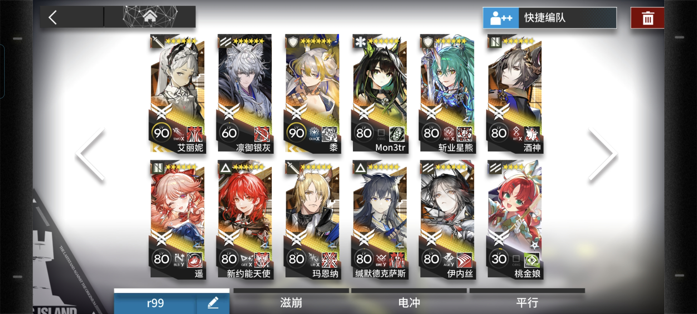
每个关卡开始前，玩家可以查看关卡信息，包括敌人类型、地形特点以及特殊规则等，从而制定相应的战术策略。
战斗开始后，玩家需根据敌人进攻方向布置干员防守，同时在费用（可等待时间自然恢复或使用干员技能回复）允许的情况下根据怪物类型选择相应职业的干员加入战斗。当敌人完全被清除后，若玩家目标生命值不为0，则战斗胜利；若玩家的目标生命值为满值，则可获得3星评价以及额外奖励。
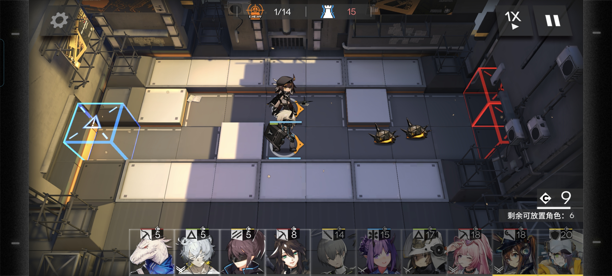（高级版保卫萝卜）
部分关卡有额外的突袭模式（完成主线2-8关卡后解锁突袭模式）。在突袭模式中，敌方单位的攻击力等基础属性会有一定提升，同时会有部分关卡附加条件（如减慢自然费用回复速度等）。突袭模式仅有1点防御值。完成关卡的突袭模式后可获得4星评价及龙门币、经验等奖励。
职业分支
游戏中共有八大职业，分别为先锋、近卫、狙击、医疗、术师、重装、辅助和特种。每个职业都有其独特的作用和技能（例如先锋需要的费用更低，并且可以通过技能获得费用），玩家需要根据战斗需求合理搭配干员阵容，从而发挥最大战斗力。
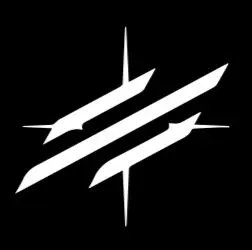 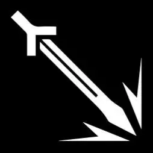 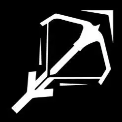 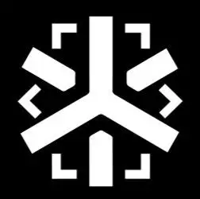 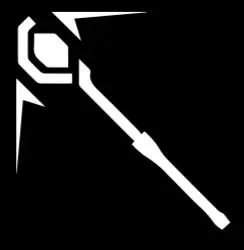 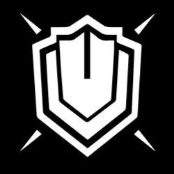 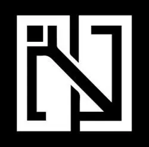干员培养
玩家可以通过消耗作战记录（经验书）、龙门币、材料等资源来提升干员的等级、潜能和技能或者精英化（进阶）、开启模组，从而增强其战斗能力。干员的等级提升可以提高其基础属性，而技能提升则可以或提升现有技能的效果。精英化则可以解锁新的技能与天赋并进一步提高基础属性，而开启模组或者提升潜能有助于提升干员的天赋效果。
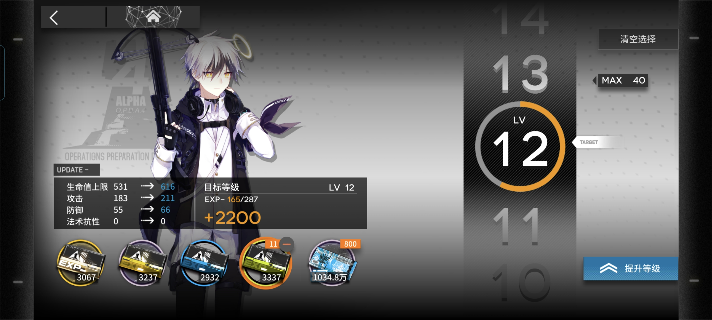 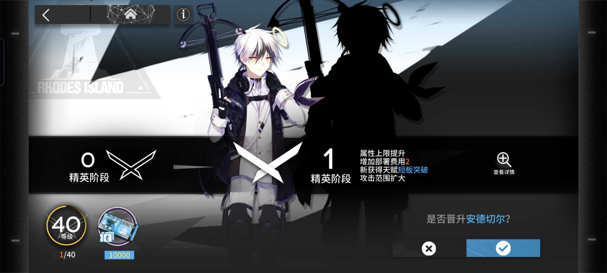干员获取则是通过公开招募或者定向寻访（抽卡）获得，星数越高的干员（最高为六星）的能力越强，培养花费的资源也就越多。
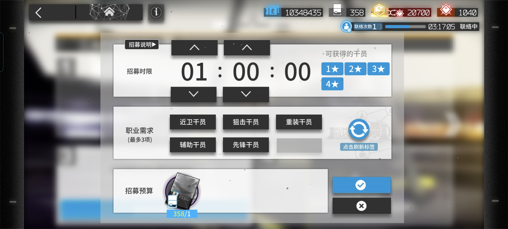 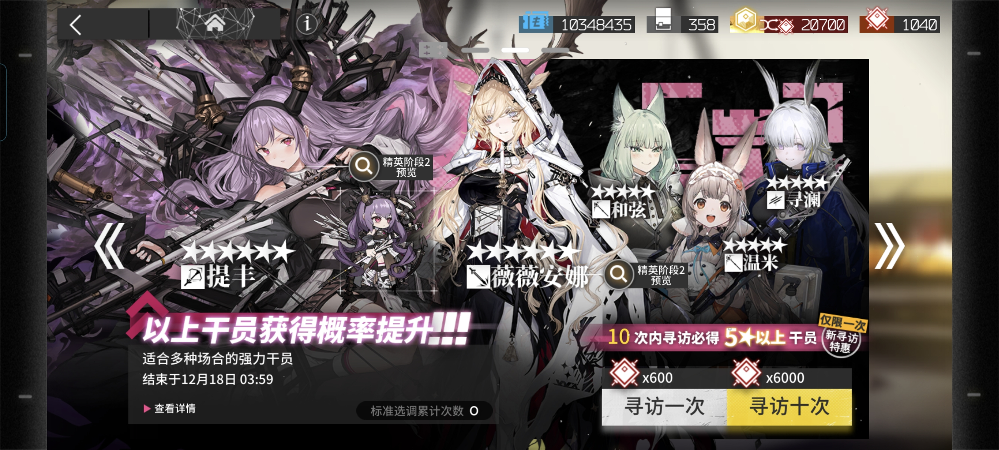基建系统
玩家可在罗德岛基建场景中建造制造站、贸易站、发电站、宿舍、会客室、加工站、办公室和训练室，并通过这些设施获取资源，提升干员能力等。
而干员进驻基建设施后会消耗心情，心情值归零后后干员将失去其基建技能的加成效果，此时玩家应将注意力涣散的干员进驻到宿舍内回复心情。
此外，玩家可用龙骨对控制中枢进行升级，这将逐步解锁基建层数。同时可通过该功能查询简报，从而知悉基建系统的产能和生产类型。
玩家可以通过升级各类设施来解锁不同的效果。基建设施中宿舍等级上限为5级，进驻人数恒定为5人；其余设施上限均为3级，其中制造站与贸易站人员上限为3人，会客室与训练室为2人，其余均为1人。
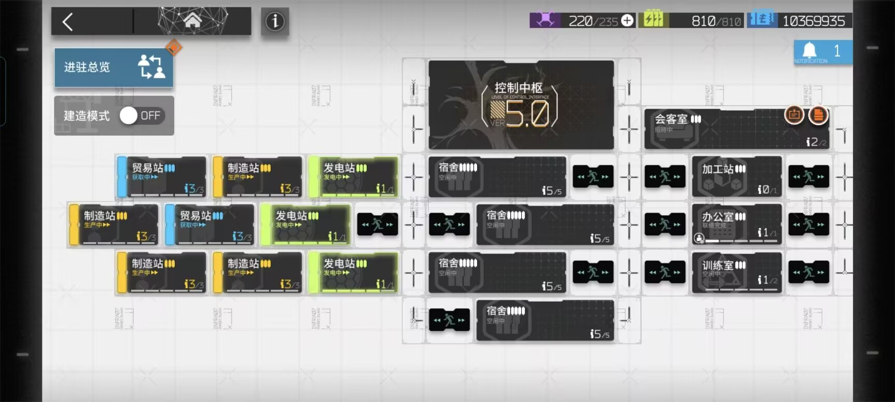 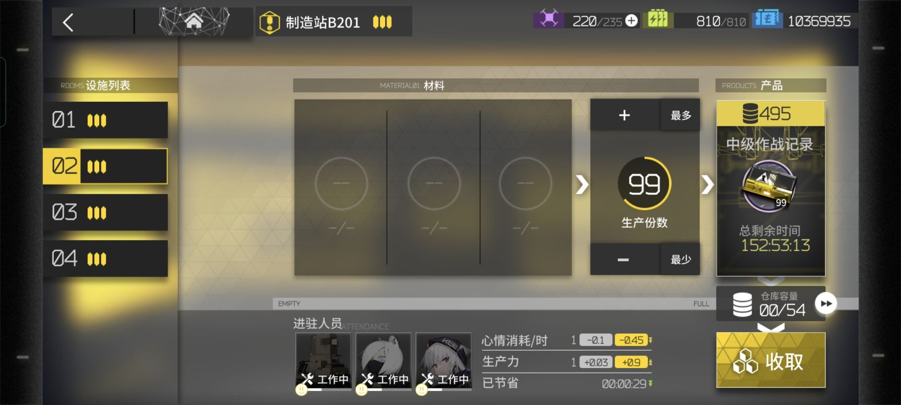
其他玩法
游戏中还有许多其他玩法，例如：活动关卡、危机合约、集成战略、生息演算等。这些玩法为玩家提供了更多的挑战和奖励，同时也丰富了游戏的内容和体验。
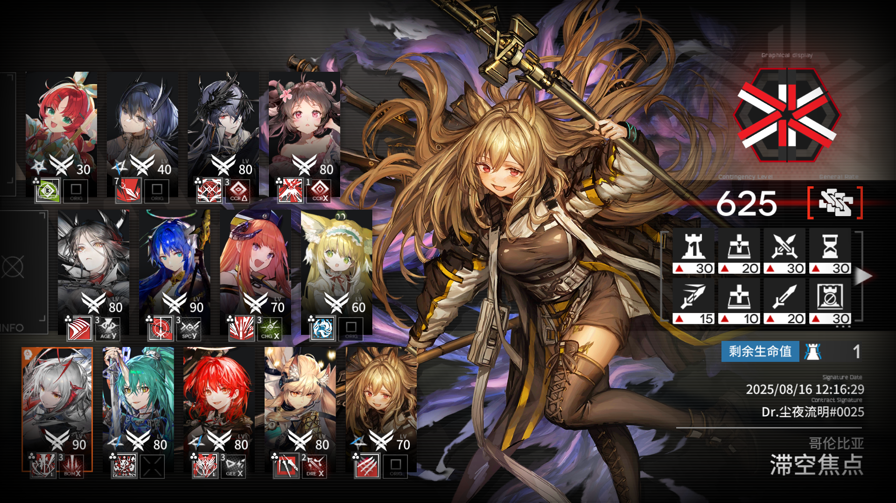 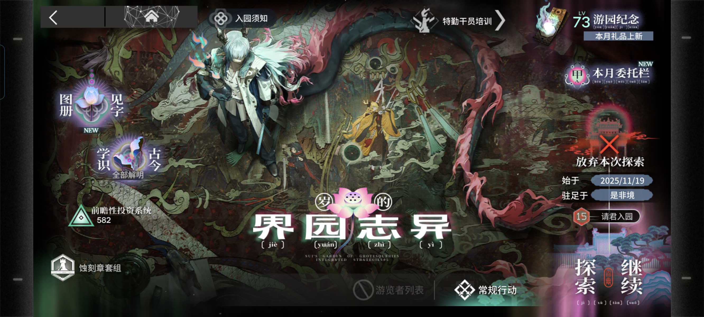 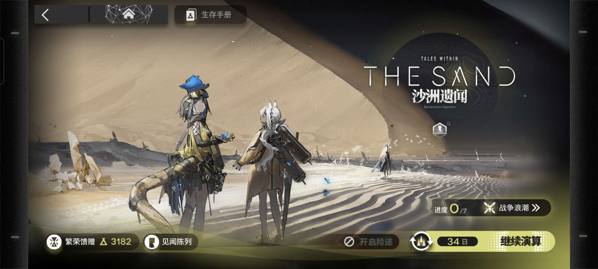